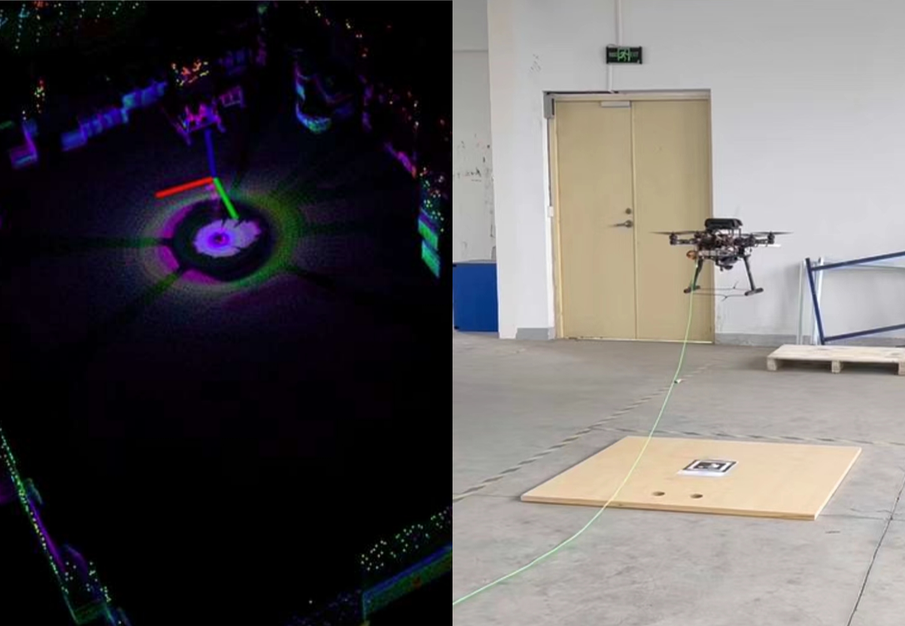

个人信息
教育经历
实习经历
研究经历
动态SLAM与分割的一致性框架研究

动态环境下SLAM和分割一致性框架的研究。本研究通过区分特征点来改善感知。同时，考虑到所获得的环境分割，以消除动态目标对定位和映射的影响，目前在openLORIS数据集上进行测试。同时，考虑视觉传感器范围的局限性。从相机获得的环境图像信息与从LiDAR获得的精确深度估计相结合。这可以获得丰富的环境3D特征点，用于环境障碍物感知和动态障碍物运动估计。这项工作仍在进行中。(2024)
四旋翼无人机在密集动态环境的避障研究


针对无人机在动态环境中避障飞行进行研究。开发了一种一致性区分动态和静态点云的方法，该方法通过相邻的点云帧快速获得物体估计速度。同时针对有限感知视场无人机，提出了一种主动感知的轨迹规划方法。此外，此处根据开源行人运动库pedsim_ros在Gazebo仿真器中进行映射，以模拟真实行人的运动效果。目前这项工作已被IEEE ROBIO 2024接收。(2024)
激光雷达动态环境感知技术研究
通过激光雷达获得点云数据对于动态环境进行研究。开发了基于激光雷达的环境感知算法，并在Gazebo内搭建了行人仿真环境，并用雷达进行实时感知。同时在现实环境中用搭载Livox-AVIA的激光雷达无人机对多个动态目标进行测试验证。(2024)
视觉引导商用飞机着陆技术研究
根据PIDNet在机载的NUC上实时对跑道进行语义分割，以自动引导固定翼飞机保持横向姿态。在此根据跑道中线与图像中轴的误差进行姿态控制。(2024)
多无人机编队飞行与协同搜索研究

参与开发高速四旋翼无人机编队飞行研究。基于RTK提供全局定位，并通过4G模块进行消息互传，实现了速度7m/s的编队保持。同时实现了三机协作搜索地面区域，并进行分布式的通讯。(2024)
可折叠全动薄膜翼微型无人机研究

本科期间参与的柔性可折叠微小型无人机研究，其可以由折叠的状态弹射飞行，并由薄膜翼面的变形提供升力。(2021)
该项工作曾获2020年，2021年“冯如杯”学生学术科技作品三等奖，2021年第七届中国国际“互联网+”大学生创新创业大赛一等奖。
成果获得“可折叠全动薄膜翼微型无人机系统”发明专利，专利号CN202210063076.3。
SE(3)空间上的四旋翼无人机轨迹跟踪控制器研究


本科毕业设计内容，基于PX4的四旋翼无人机轨迹跟踪控制器开发。基于文献Geometric Tracking Control of a Quadrotor UAV on SE(3)原理进行开发。考虑四旋翼无人机的微分平坦特性将其姿态跟踪误差映射在SE(3)空间中进行解算以保证精确的轨迹跟踪。(2022)
激光系留无人机定位与悬停控制研究

开发搭载Livox-mid360激光雷达传感器的系留无人机平台，并部署FAST_LIO算法为其提供精确定位，同时融合下视单目相机对Apriltag进行识别，以实现与地面移动机器人的跟随并精确着陆。(2023)
四足机器人平台二次开发


通过外部IMU数据以保证VINS-Fusion在四足机器人上鲁棒运行，并实时感知环境障碍物。在避障中开发了基于DWA的局部运动规划算法。(2023)
成果获得“适用于复杂楼宇室内环境的足式机器人智能自主探索方法及装置”发明专利，专利号CN202311066365.X。
四旋翼无人机智能算法竞赛

参加“智航杯”全国无人算法竞赛并获得仿真赛第一名，实物赛第三名的成绩。该算法竞赛包含无人机的未知环境自主探索，目标搜索及跟踪，识别区域降落。(2023)
出版物
[1] Y. Lin, Z. Meng, J. Ji, Z. Wang and W. Gai, "Efficient Perception and Obstacle Avoidance Flight of UAVs in Dynamic Dense Environments," 2024 IEEE International Conference on Robotics and Biomimetics (ROBIO). (Accepted).
[2] Y. Lin, Z. Meng, Z. Wang, G. Zhao, J. Wang, and C. Jiang, “An Efficient Dynamic Obstacle Perception and Avoidance framework for Robust Real-Time UAV Trajectory Planning,” IEEE Transactions on Automation Science and Engineering. (Under review).
曾获荣誉
硕士学术奖学金二等奖，2023。
北航优秀毕业生（学士），2022。
学科竞赛奖学金一等奖，2021。
创新创业奖学金一等奖，2021。
学习优秀奖学金二等奖，2020，2021。
“智航杯”全国无人机智能算法竞赛仿真赛第一名，实物赛第三名，2023。
北京国际“互联网+”创新创业大赛一等奖，2021.08。
全国大学生周培源基础力学竞赛团体赛三等奖，2021.08。
美国数学建模竞赛H奖，2021.04。
第七届MathorCup大学生数学建模挑战赛二等奖，2021.06。
“冯如杯”学生学术科技作品竞赛三等奖，2020，2021。
其他技能
编程语言：C++，python，matlab。
开发经验：PX4飞控二次开发，Ubuntu，ROS系统，Gazebo仿真环境。
英语：已通过CET-6，IELTS总分6.5。
硬件能力：三维建模，无人机平台搭建。
曾搭建的无人机平台